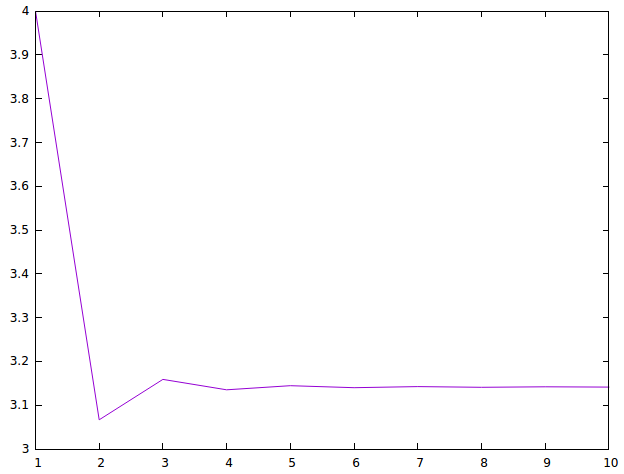

Cálculo de pi mediante la fracción continua de Lange
En 1999, L.J. Lange publicó el artículo An elegant new continued fraction for π.
En el primer teorema del artículo se demuestra la siguiente expresión de π mediante una fracción continua

La primeras aproximaciones son
a(1) = 3+1 = 4.0 a(2) = 3+(1/(6+9)) = 3.066666666666667 a(3) = 3+(1/(6+9/(6+25))) = 3.158974358974359
Definir las funciones
aproximacionPi :: Int -> Double grafica :: [Int] -> IO ()
tales que
- (aproximacionPi n) es la n-ésima aproximación de pi con la fracción continua de Lange. Por ejemplo,
aproximacionPi 1 == 4.0 aproximacionPi 2 == 3.066666666666667 aproximacionPi 3 == 3.158974358974359 aproximacionPi 10 == 3.141287132741557 aproximacionPi 100 == 3.141592398533554 aproximacionPi 1000 == 3.1415926533392926
- (grafica xs) dibuja la gráfica de las k-ésimas aproximaciones de pi donde k toma los valores de la lista xs. Por ejemplo, (grafica [1..10]) dibuja

(grafica [10..100]) dibuja

y (grafica [100..200]) dibuja

Soluciones
import Graphics.Gnuplot.Simple -- fraccionPi es la representación de la fracción continua de pi como un -- par de listas infinitas. fraccionPi :: [(Integer, Integer)] fraccionPi = zip (3 : [6,6..]) (map (^2) [1,3..]) -- (aproximacionFC n fc) es la n-ésima aproximación de la fracción -- continua fc (como un par de listas). aproximacionFC :: Int -> [(Integer, Integer)] -> Double aproximacionFC n = foldr (\(a,b) z -> fromIntegral a + fromIntegral b / z) 1 . take n aproximacionPi :: Int -> Double aproximacionPi n = aproximacionFC n fraccionPi grafica :: [Int] -> IO () grafica xs = plotList [Key Nothing] [(k,aproximacionPi k) | k <- xs]